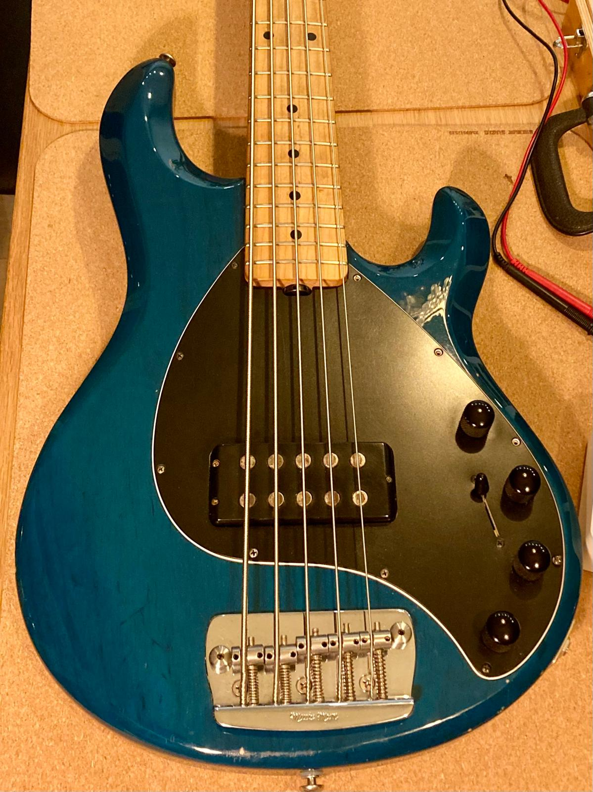

Bijvoorbeeld...

Afstellen
Afstellen van gitaren, bijvoorbeeld deze Ibanez in SG-stijl met Tune-o-matic brug. Frets nakijken, zo nodig vlakken, crownen en polijsten. Of de topkam vervangen of net wat lager invijlen. Alles in goed overleg natuurlijk.

Fretwerk
Na jaren spelen waren de frets van deze Stratocaster wat gesleten... er lijkt een refret nodig, maar even nauwkeurig naar de frets gekeken en de conclusie was dat een fretleveling op dit moment beter was. Na het afvlakken van alle frets bleef er nog genoeg frethoogte over, dus mooie fret leveling gedaan... "Speelt prima, blij mee!"
Lees meer...
Reparatie
Deze Stingray bas had een probleem, er kwam geen geluid meer uit....
Lees meer...
Reparatie
Deze prachtige gitaar hoeft natuurlijk niet gerepareerd te worden, totdat de elektronica verborgen in de gitaar begon te haperen; het geluid valt af en toe weg. Dus nagekeken en bedrading en soldeerwerk hersteld, kan zo het podium weer op.